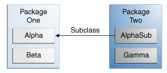

Los modificadores de nivel de acceso determinan si otras clases pueden usar un campo particular o invocar un método particular. Hay dos niveles de control de acceso:
público, o privada-de-paquete (sin modificador explícito).
público, privado, protegido, o
privado-de-paquete (sin modificador explícito).
Una clase puede ser declarada con el modificador public, en cuyo caso la clase será visible a todas
las clases en cualquier parte. Si una clase no tiene modificador (por defecto, también conocido como
privado-de-paquete), es visible sólo dentro de su propio paquete (los paquetes son grupos de nombrado de
clases relacionadas — aprenderá sobre ellos en una lección más tarde).
Al nivel de miembro, puede también usar el modificador public o sin modificador
(privado-de-paquete) tal como con las clases de nivel más alto, y con el mismo significado. Para los
miembros, hay dos modificadores de acceso adicionales: private y protected. El
modificador private especifica que el miembro sólo puede ser accedido en su propia clase. El
modificador protected especifica que los miembros pueden ser solo accedidos en su propio paquete
(como con privado-de-paquete) y , por añadidura, por una subclase de ésta clase en otro paquete.
La siguiente tabla muestra el acceso a los miembros permitidos por cada modificador.
| Modificador | Clase | Paquete | Subclase | Mundo |
|---|---|---|---|---|
public |
S | S | S | S |
protected |
S | S | S | N |
| sin modificador | S | S | N | N |
private |
S | N | N | N |
La primera columna de datos indica si la clase por sí misma tiene acceso al miembro definido por el nivel de acceso. Como puede ver, una clase siempre tiene acceso a sus propios miembros. La segunda columna indica si las clases en el mismo paquete que la clase (independientemente de su parentazgo) tiene acceso a el miembro. La tercera columna indica si las subclases de las clases declaradas fuera de este paquete tienen acceso a o otro miembro. La cuarta columna indica si todas las clases tienen acceso al miembro.
Los niveles de acceso afectan en dos formas. Primero, cuando usa clases que vienen de otro fuente, tal como las clases en la plataforma Java, los niveles de acceso determinan cuales miembros de esas clases tus propias clases pueden usar. Segundo, cuando escribe una clase, necesita decidir qué nivel de acceso debería tener cada variable miembro y cada método en su clase.
Veamos una colección de clases y veamos como los niveles de acceos afectan a la visibilidad. La siguiente figura muestra las cuatro clases en este ejemplo y cómo están relacionadas.

Clases y paquetes del Ejemplo utilizados para ilustrar los niveles de acceso
La siguiente tabla muestra dónde los miembros de la clase Alpha son visibles para cada uno de los modificadores de acceso que pueden ser aplicados a ellos.
| Modificador | Alpha | Beta | Alphasub | Gamma |
|---|---|---|---|---|
public |
S | S | S | S |
protected |
S | S | S | N |
| sin modificador | S | S | N | N |
private |
S | N | N | N |
Si otros programadores usan su clase, usted querrá asegurarse de que no puedan ocurrir errores por un mal uso. Los niveles de acceso pueden ayudarle a hacer esto.
private a menos que tenga una buena razón para no hacerlo.
públicos excepto para las constantes. (Muchos de los ejemplos en el
tutorial usan campos públicos. Esto puede ayudar a ilustrar algunos puntos de forma concisa, pero no
está recomendado para código de producción).
Los campos públicos tienden a enlazarle a una implementación particular y limita su flexibilidad en los
cambios de su código.